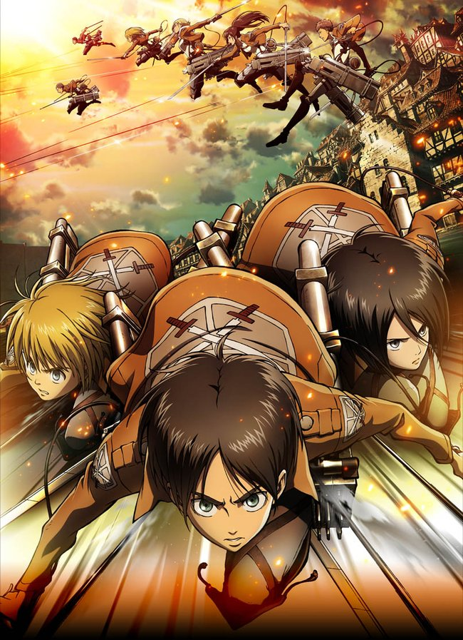

Season 1
Eren, Mikasa and Armin join the military after the fall of Wall Maria.
View episode list
- 01–02 The fall of Shiganshina
- 03–04 Cadet training
- 05–13 The battle for Trost
- 14–16 Choosing the Survey Corps
- 17–22 The expedition
- 23–25 Stohess